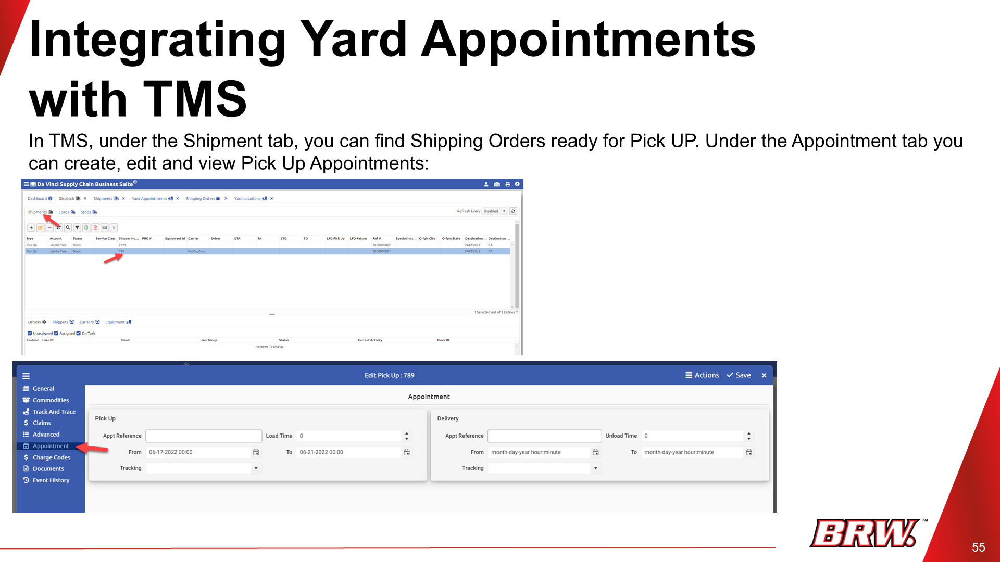
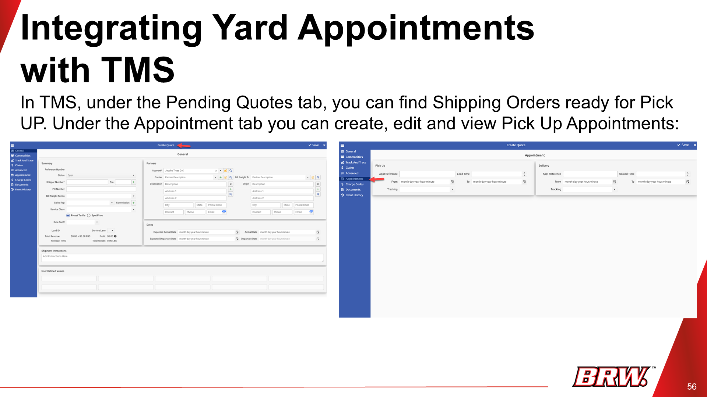
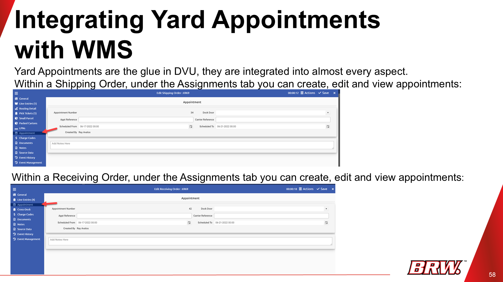
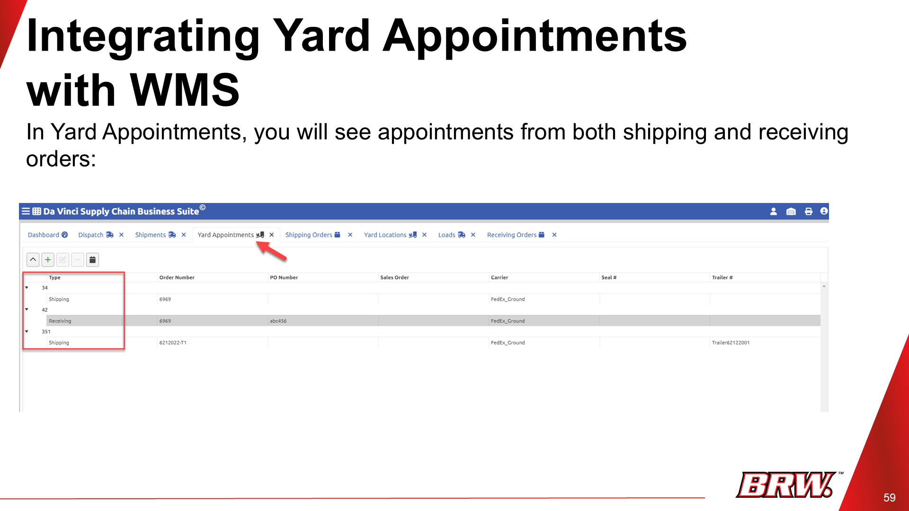
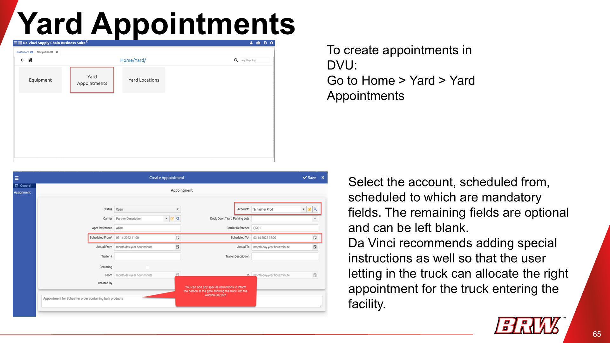
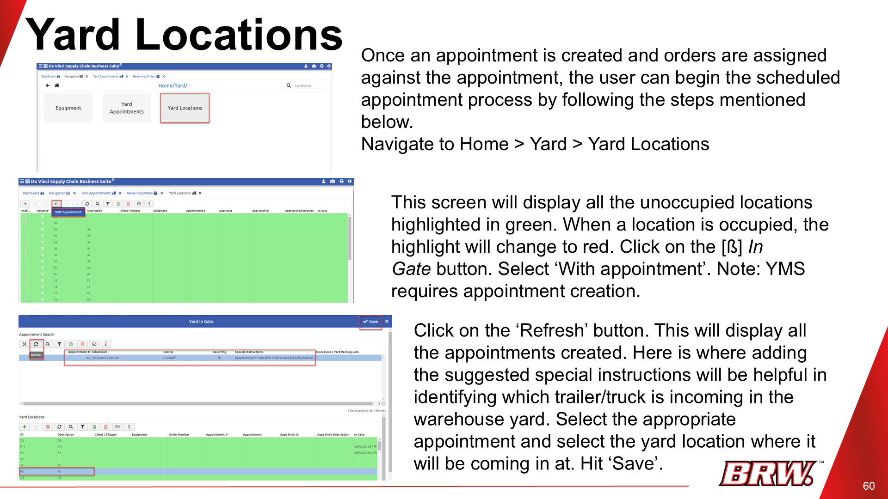
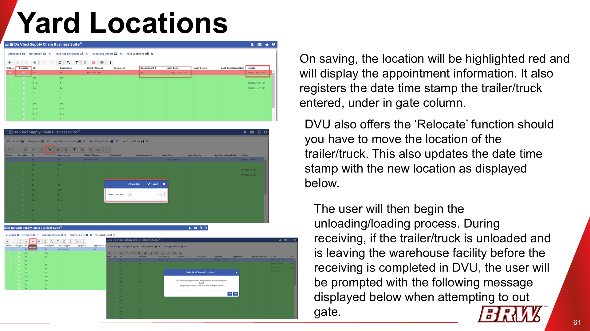
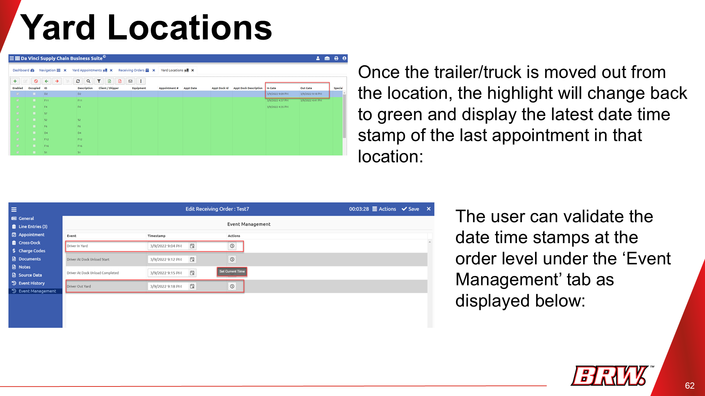

Introduction to Yard Management
The efficient organization and movement of trailers, trucks, and other equipment within a facility's yard. It's crucial for smooth transitions between transport and warehouse operations.
Integrating Yard Appointments with TMS


Purpose: Manage appointments for pickups and deliveries directly within your TMS.
Shipment Tab:
- In TMS, go to the "Shipment" tab.
- Find shipping orders ready for pick-up.
- Under the "Appointment" tab, create, edit, or view "Pick Up Appointments".
Loads Tab:
- In TMS, go to the "Loads" tab.
- Find shipping orders ready for pick-up.
- Under the "Appointment" tab, manage pick-up appointments.
Integrating Yard Appointments with WMS


Purpose: Link yard appointments with your warehouse shipping and receiving processes.
Shipping Orders:
- Go to a specific "Shipping Order".
- Use the "Assignments" tab to manage appointments.
Receiving Orders:
- Go to a specific "Receiving Order".
- Use the "Assignments" tab to manage appointments.
Viewing All Yard Appointments

Purpose: See a centralized list of all scheduled appointments from shipping and receiving orders.
- Go to the "Yard Appointments" tab (e.g., Dashboard > Yard Appointments).
Yard Locations & Appointment Processing
  
Purpose: Manage yard locations and process arrivals.
- Navigate to Home > Yard > Yard Locations.
- Unoccupied locations appear in green.
- Select "In Gate" and choose "With appointment".
- Click "Refresh" to display appointments.
- Select an appointment and yard location, then click "Save" (location turns red).
- Use "Relocate" to move trailers/trucks and update timestamp.
- Once unloading/loading is complete, select "Out Gate" to finalize (location turns green).
- Validate timestamps in the "Event Management" tab at the order level.
Yard Equipment
Purpose: Track trailers and containers even without appointments.
- Last Free Day for Pick: Deadline to pick up without penalty.
- Last Free Day for Return: Deadline to drop off without penalty.
- Go to Home > Yard > Equipment.
- Add or manage yard equipment records.